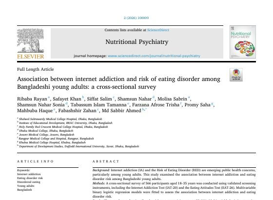
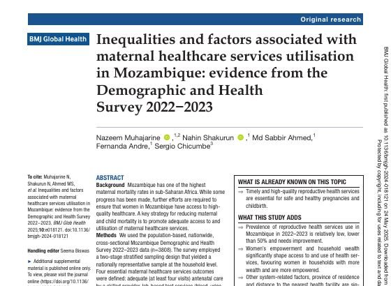
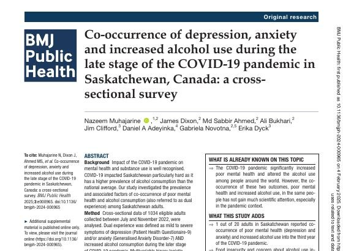

Translating health data into evidence for action
Hi, I'm Sabbir Ahmed, an epidemiologist at the provincial Ministry of Health in Saskatchewan, Canada. I work on childhood immunization surveillance and population health research.

2-Minute Public Health

How much money do you need to show in the bank for an MPH in Canada?
Many students from Bangladesh want to do an MPH in Canada. Here is a real cost example from USask: tuition, student fees and the living costs Canada asks you to show.
LatestNovember 23, 2026 · About 2 minutes

Your First Degree Doesn't Lock in Your Career
My first degree was in nutrition, and today I'm an epidemiologist. Here's how I moved from Bangladesh to public health in Canada, and what helped along the way.
November 10, 2026 · About 2 minutes

Measles came back to Canada. What happened?
For almost 30 years, Canada kept measles from spreading. Then one outbreak lasted two years and made more than 6,400 people sick.
November 5, 2026 · About 2 minutes
Latest research
See all 38 papers
Association between internet addiction and risk of eating disorder among the Bangladeshi young adults: a cross-sectional survey

Inequalities and factors associated with maternal healthcare services utilisation in Mozambique: evidence from the Demographic and Health Survey 2022−2023
